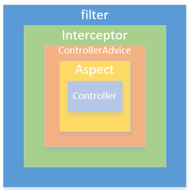

过滤器（Filter）和拦截器（Interceptor）是Web项目中常用的两个功能，本文将简单介绍在Spring Boot中使用过滤器和拦截器来计算Controller中方法的执行时长，并且简单对比两者的区别。
现有如下Controller：
1 |
|
下面通过配置过滤器和拦截器来实现对get方法执行时间计算的功能。
过滤器
定义一个TimeFilter类，实现javax.servlet.Filter：
1 | public class TimeFilter implements Filter{ |
TimeFilter重写了Filter的三个方法，方法名称已经很直白的描述了其作用，这里不再赘述。
要使该过滤器在Spring Boot中生效，还需要一些配置。这里主要有两种配置方式。
配置方式一
可通过在TimeFilter上加上如下注解：
1 |
|
@Component注解让TimeFilter成为Spring上下文中的一个Bean，@WebFilter注解的urlPatterns属性配置了哪些请求可以进入该过滤器，/*表示所有请求。
启动项目时可以看到控制台输出了过滤器初始化，启动后访问http://localhost:8080/user/1，控制台输出如下：
1 | 开始执行过滤器 |
配置方式二
除了在过滤器类上加注解外，我们也可以通过FilterRegistrationBean来注册过滤器。
定义一个WebConfig类，加上@Configuration注解表明其为配置类，然后通过FilterRegistrationBean来注册过滤器:
1 |
|
FilterRegistrationBean除了注册过滤器TimeFilter外还通过setUrlPatterns方法配置了URL匹配规则。重启项目访问http://localhost:8080/user/1，我们可以看到和上面一样的效果。
通过过滤器我们只可以获取到servletRequest对象，所以并不能获取到方法的名称，所属类，参数等额外的信息。
拦截器
定义一个TimeInterceptor类，实现org.springframework.web.servlet.HandlerInterceptor接口:
1 | public class TimeInterceptor implements HandlerInterceptor { |
TimeInterceptor实现了HandlerInterceptor接口的三个方法。preHandle方法在处理拦截之前执行，postHandle只有当被拦截的方法没有抛出异常成功时才会处理，afterCompletion方法无论被拦截的方法抛出异常与否都会执行。
通过这三个方法的参数可以看到，相较于过滤器，拦截器多了Object和Exception对象，所以可以获取的信息比过滤器要多的多。但过滤器仍无法获取到方法的参数等信息，我们可以通过切面编程来实现这个目的，具体可参考https://mrbird.cc/Spring-Boot-AOP%20log.html。
要使拦截器在Spring Boot中生效，还需要如下两步配置：
1.在拦截器类上加入@Component注解；
2.在WebConfig中通过InterceptorRegistry注册过滤器:
1 |
|
启动项目，访问http://localhost:8080/user/1，控制台输出如下：
1 | 处理拦截之前 |
从输出中我们可以了解到三个方法的执行顺序，并且三个方法都被执行了。
我们在UserController的get方法中手动抛出一个异常：
1 | ("/{id:\\d+}") |
重启项目后，访问http://localhost:8080/user/1，控制台输出如下：
1 | 处理拦截之前 |
可看到，postHandle方法并没有被执行。
执行时机对比
我们将过滤器和拦截器都配置上，然后启动项目访问http://localhost:8080/user/1：
1 | 开始执行过滤器 |
可看到过滤器要先于拦截器执行，晚于拦截器结束。下图很好的描述了它们的执行时间区别：

源码链接https://github.com/wuyouzhuguli/Spring-Boot-Demos/tree/master/26.Spring-Boot-Filter-Interceptor